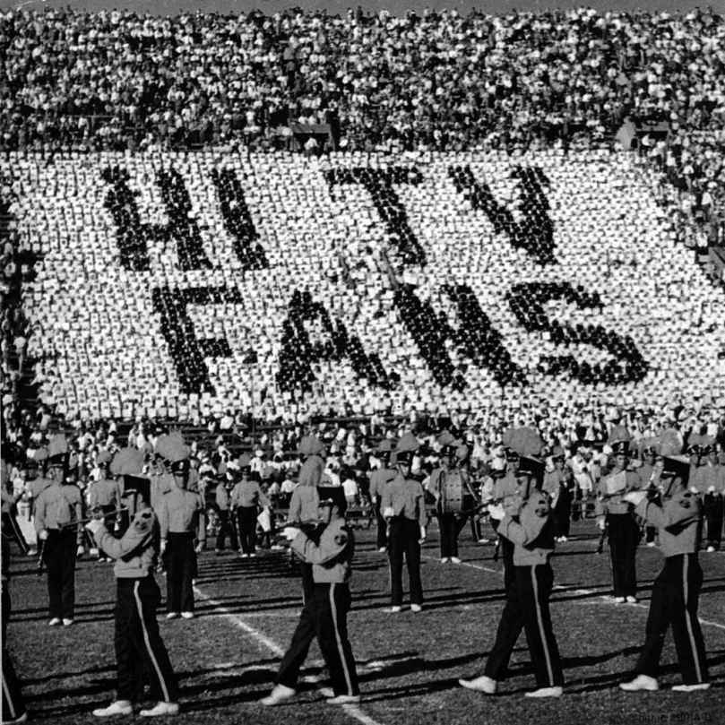

黑格尔相信，进步最终是由与大多数人步调不一的人推进的。只有这个人，真正特立独行之人，实际上体验到对于自由的约束。只有这个人有条件质疑关于幸福的普遍理解。事实上，对于黑格尔来说，“苦痛意识”才是进步之源。于法兰克福学派而言，也是如此。其成员对现代生活和文化产业多有批判。但发达工业社会为苦痛意识带来的危险或许最说明问题。岌岌可危的乃是主体性和自主性的实质，即个体抵抗试图决定生命意义与经历的外部力量的意愿和能力。
马克斯·霍克海默向利奥·洛文塔尔写道，大众文化正在欺骗个人远离他本人的时间经验，亨利·柏格森称其为绵延 （durée ）。马尔库塞担心人们不再具有充当主体的能力，他们被操纵着认为有些事情取决于自己的选择。霍克海默和阿多诺在《启蒙辩证法》中表达了随后成为核心集体普遍态度的内容：

图7 幸福意识的典型特征是盲从和缺乏个性
格奥尔格·冯·卢卡奇——当时还在使用贵族称谓——作为青年反叛者以其他青年反叛者为写作对象，他陷于厌恶旧文化和渴望新文化之间，在《心灵与形式》（1911年）中为批评家设想了具有改造能力的角色。其中的文学和哲学文章振聋发聩、复杂深奥，而且明显打破了传统。卢卡奇认为，艺术使个人反抗社会成为可能，不仅仅通过挑战大众品味和观念，而且通过以其寓言性和象征性强化体验。
为了引出这些特性，批判性解释也许是必要的。然而反过来，这样的哲学审问将产生其他解释。文学批评以及艺术创作中的哲学实践因此按照定义都是未完成的。它们始终有待新时期新受众的重新解释。这是由于创造性活动的产物隐藏着等待发现进而恢复的秘密。批评文章不亚于艺术品，通过其形式可以引出被压抑的灵魂体验。哲学与美学、思考与体验之间的界限开始消解。艺术家此时在卢卡奇关于这一术语全新的并且更为宽泛的定义中看起来是个“成问题的人”。这个新定义的代言人不是政治革命者，而是带有不拘传统倾向的博学的文化激进人士，比如尼采：这位代言人预言了充满活力的主体性、新兴文化以及经过改造的现实。
法兰克福学派认为，反对大众社会意味着反对大众文化。其核心集体采取了知识分子局外人的立场。他们知道大众传媒倾向于支持右翼力量的事业。而他们也清楚，文化产业也可以产生表面上倾向于进步的作品。大众传媒已然经常痛斥资本主义、不容异己和权力精英。然而，即使如此，它似乎还是会对经验加以规范，并破坏批判性思考。按照法兰克福学派的看法，文化产业正是凭借自身的特征整合了所有对手。其大众性的直接作用就是作品的无能为力。所有作品都不能幸免：瓦西里·康定斯基的抽象画不能，阿诺尔德·勋伯格严谨的知性音乐也不能。
这里涉及一种动力：古典音乐曾经作为电影（如查理·卓别林和弗里兹·朗的电影）背景，而如今时常作为商业广告的衬托。与此同时，反传统的先锋派进入了博物馆。其作品此时也可以得到心怀善意的自由之人平静的凝视。有时，文化产业呈现的东西会使文化庸人感到一丝不适。但这种大惊小怪毫无意义。艺术作品的批判潜力或乌托邦潜力已然丧失。它已经沦为自由丰裕社会中另一种形式的自由表达，仅此而已。
法兰克福学派相信，文化产业是全面管制社会的一项本质特征。马克思主义者始终视文化为统治阶层的支柱，路易·阿尔都塞随后写到一种“意识形态国家机器”。但法兰克福学派从另一个方向进行着这项讨论。核心集体就大众文化的特征提出的看法，其对文化标准进行的持续攻击，涉及整合最初由保守派提出的忧思。
18世纪时，埃德蒙·伯克就已为正在被扯碎的“生活的精美帷幔”而忧虑，他在19和20世纪的那些不甚博学却更为激进的追随者们同古斯塔夫·勒庞一道，坚持认为“民众成为至高权力，野蛮风气甚嚣尘上” [14] 。精英们时常要求警惕何塞·奥特加·伊·加塞特所谓的“大众人”及其对公共生活的参与。这一切使得有必要突出批判理论与真正的保守派对大众文化的各种抨击之间的区别。
霍克海默、阿多诺、本雅明和马尔库塞并没有过分担忧传统和文化权威受到的威胁。他们更接近尼采这位文化革命者而非政治保守派，后者谴责维多利亚时代的衰败及其清教徒式的顺从和虚伪以及失效的唯物主义和无用的理性主义。对于法兰克福学派而言，这仍是“更高精神”因“群氓”无法从知性上驾驭其“权力意志”而注定被误解或败坏的问题。
如果一切都是不真实的，如果没有办法在政治上影响社会，那么文化批判便成为唯一的反抗源泉。指挥棒从黑格尔和马克思转移到尼采手上，具有贵族气息的激进主义使他作为高雅艺术的典范对抗其市井对手，并作为现代主义的代表抗衡文化庸人。他是一位世界主义者，反对庸俗的反犹主义，反犹主义的拥护者如作曲家理查德·瓦格纳时常将他的偏见掩藏在“民族主义”的外衣之下。但尼采也怀疑所谓的道德和科学的普遍基础。
他对人民大众或体现在进步群众运动中的民主精神鲜有同情。
尼采对于他眼中社会渐增的平庸心怀厌恶，他敏锐地意识到日渐加深的文化痼疾并凭直觉知道末日，由此支持实验方法、个性以及看待现实的“透视的”视角。
《启蒙辩证法》讨论了这些主题，但两位作者关于文化产业的看法已经显示在早期作品当中。阿多诺的《论音乐的拜物特征与倾听的退步》（1938年）指出，文化产业的产品并不是只不过在后来被包装成商品的艺术作品，相反，它们从一开始就被视为商品。霍克海默紧随其后，在《艺术与大众文化》（1941年）中，以支持高雅艺术抗衡大众娱乐。
他们都认为，只有技术上最为复杂的作品才能推动对于下降的文化标准和瞬息万变的风尚的反思和反抗。问题不在于政治内容，而在于它得到表达的形式——媒介即讯息。阿多诺在《最低限度的道德》中就此直率地写道：“衡量一种思想的价值要依据它同熟知思想的延续之间的距离。它的价值客观上随着这一距离的缩短而降低。”
法兰克福学派就其关于公共生活的看法而言是精英主义者。但其成员在倾向上无疑是现代主义的。他们对过去的某个黄金时代不抱有浪漫幻想，也不关注当权者的存在主义焦虑。他们致力于挑战文化产业，原因在于它正在使经验标准化并由此致使常人越来越乐于接受传统和权威。与过去的非传统的和浪漫的看法相一致，法兰克福学派认为物质丰裕将导致精神枯竭。幸福意识遭到谴责，因为它是空洞乏味的。赫伯特·马尔库塞坚称，文化产业是关闭政治世界的同谋。
个人的沉寂和政治生活的关闭被视为资本主义、官僚国家和大众媒体的功用所在。于尔根·哈贝马斯在其富有开拓性的首部作品《公共领域的结构转型》（1961年）中，对此进行了分析。它的德文副标题是“资产阶级社会的一个范畴”。阿多诺的两名年轻学生亚历山大·克鲁格和奥斯卡·内格特随后以他们关于其“无产阶级”对手的研究，为这项计划进行了补充。但是，将公共领域引入社会学词汇的是哈贝马斯。
他将这一领域视为组织化的国家政治机构与市民社会的经济力量之间的中介。公共领域包括能够促进公共辩论的所有活动和组织。范围从新闻自由到城镇会议、从家庭到沙龙、从教育制度到廉价的书籍生产。公共领域或许起源于中世纪自由城市，在启蒙运动和1688——1789年的民主革命期间获得发展。这就是公开审议本身成为一种价值、屈辱的民众运用其常识以及个人行使其公民权利的背景。公众舆论是赋权的基础：在政权依然摇摆于君主制和共和制之间时，它往往保护个人免遭专断强权的侵害。
所有争取政治民主和物质平等的重要运动——从19世纪社会民主主义工人运动到20世纪60年代的女性解放运动——都产生了充满活力的公共领域。甚至可以公平地讲，一场运动的性质和能量可以从其公共领域的活力中获得。
然而，说到向大众赋权，一旦公众舆论同宣传联系起来，问题也随之而生。随着大众媒体获得主导地位，民众斗争便开始将权力让予同官僚制福利国家有关的组织和专家。新的文化机器日益重视共识并收缩辩论范围。哈贝马斯在他的全部研究生涯中始终专注于民主意志的形成所扮演的角色。他最初支持20世纪60年代的学生运动是有原因的。他也持续相信，一个经过改造的公民社会或许还能抗衡工具理性不断提升的主导地位：《合法化危机》（1975年）一直是他最为重要（即便受到忽视）的著作之一。但哈贝马斯对解放话语和政治参与的首要性的重视，并不是核心集体多数成员的共识。在他们看来，“只有商业创造的词汇”占据着主导地位，尝试大众启蒙只会导致大众欺骗。
物化持续保持着对公共生活的控制。不只如此——虚假条件的本体论危及主体性以及个人做出道德判断的能力。对幸福意识的力量进行反抗因此转变为道德要务。至少法兰克福学派是这么认为的。问题仅仅在于这样的反抗意味着并且会带来什么。如果全面管制的社会是真正全面的，能够整合并驯化所有批判行为，那么政治行动的前景便是晦暗的。作为政治实践的反抗就是一项毫无价值的事业。否定是唯一可行的选择，否定辩证法必须对批判事业做出界定。相形之下，如果有组织行动能被证明是有效的，那么这个体系就不是全面管制的，由于存在有意义的备选办法（就政策和计划来说），也就需要不同的批判方法。将全面管制的社会视为一种固有趋势无助于解决问题：否定辩证法和实践理论是相互排斥的选择。
讽刺的是，伴随社会研究所于1947年迁回德国，它的核心集体转而成为真正的公共知识分子。马克斯·霍克海默成为法兰克福大学校长。怀着对共产主义和催生纳粹主义的社会分裂的担忧，他既支持越战，也成为学生运动的坚定批判者。与此同时，赫伯特·马尔库塞和埃里希·弗洛姆在20世纪60年代和70年代成为知识界的超级巨星。他们都认同新左派，并且公开支持涉及社会正义、反帝国主义、人权、废除核武器以及限制军工联合体的运动。
至于于尔根·哈贝马斯，他关于当代政治问题的文章被众多书籍收录。作为教育改革和新左派的早期支持者，尽管尖锐地批评其过激行为，哈贝马斯还是始终赞赏其投身激进民主和社会正义。即使T. W. 阿多诺也成为公众人物。众所周知，他猛烈地批判时常以他本人的激进学生们为代表的新左派，为力图澄清他的观点接受了许多电台采访并写出通俗文章。他甚至在《地上的繁星》（1953年）中对占星术进行了尖刻的分析。
如果说法兰克福学派介入了公共领域，当然有理由问这是否说明开放社会并不存在。包容显然拓展至对全面管制社会的批判。这种情况可能会引发概念混乱。赫伯特·马尔库塞在随后的论文《压迫性宽容》（1965年，或许是他最声名狼藉的一篇）中试图探讨这个问题。在这一作品中，他坚称古典自由主义宽容概念已经失去了它的激进特征。
一旦与对宗教偏见和政治权威的批判，与实验以及与做出判断联系起来，宽容便成为维持现状的堡垒。马尔库塞的论证又一次依托于媒介即讯息这一观念。就文化产业在公共论坛中围绕任何问题提出的所有立场而言，它们最终看起来都具有相同的价值。文化产业所表现出来的宽容因此导致所有真理主张成为相对性的——或者更确切地说，接受它们变成了品味问题。这时，不仅美，而且真理 也取决于观察者的眼光。发生在艺术上的问题也发生在话语上。两者都从属于商品形态，由此质的差异转变为单纯的数量差异。在考察帝国主义与战争或对于福利国家和神创论的抨击时，某一种态度与其他态度并无高下之分。大众媒体使得反抗不比支持更为合理。
压迫性宽容乃是真实的现象。福克斯新闻就是这一概念的生动体现，但它并没有减轻马尔库塞文章的相关问题。首先，宣称宽容丧失了激进的棱角与声称宽容具有压迫性是有区别的。政治重点也放错了地方。真正的问题从不是压迫性宽容，而是对宽容的压迫 。审查制度依然盛行，而且从历史上看，当公民自由在发达工业社会受到限制时，左派总是遭受最沉重的苦难。
对于评判审查对象的标准、建立审查机制所需要的官僚机构或者这一官僚机构发展的可能性，马尔库塞的文章鲜有涉及。它也忽略了文化产业如何时常抨击不宽容以及反动的价值观：《全家福》及其主角阿尔奇·邦克开创了一股潮流。电视情景喜剧如《考斯比秀》和《美好时光》或《威尔和格蕾丝》和《艾伦》或许没有批判性地描绘被压迫群体和被污蔑群体的“真实生活”。但它们在为之服务的更广泛的道德和政治议程上是进步的。讨论次级群体所取得的成果的整合，或者讨论它们如何强化了体制，只是在回避问题的实质：这些成果是否受到驯化，或者体制本身是否被迫做出适应和改变？
马尔库塞的《单向度的人》突显了将技术转向克服匮乏和安抚生存带来的可能性。然而，发达工业社会依然建立在资产阶级（购买劳动力并控制生产资料）和工人阶级（出卖劳动力并处于同生产资料的异化关系中）利益的结构性矛盾之上。但这一客观矛盾并没有在主观上得到这样的认识。由于共产主义真正的不足之处、西方资本主义的表面富足以及——也许最重要的——文化产业，工人阶级一方缺乏政治觉悟。
马尔库塞在美国推广了这一概念。事实上，如同法兰克福学派的其他成员，他深切地关注文化产业如何预制经验并使批判思考失去效用。他的观点显然建立在《启蒙辩证法》的基础之上。那些应该将性冲动和赋予生命的冲动在美学上升华为艺术的东西，反而被文化产业改变为进行自我调整以适应商业逻辑的作品。“压抑性的去崇高化”耗尽了它的解放和批判潜力。个人只得依靠他们自身的资源。孤独和异化导致对文化产业的愈加依赖，也参与着幸福意识。流行艺术在削弱发挥乌托邦想象的心理能力的同时，强化了这一系统。一件艺术品的流行带来的是它的垂死挣扎。
但是，一件作品的流行是否必然会导致其批判性或艺术激进主义的丧失？表面上接连不断的毫无缘由的反叛印证了阿多诺提出的“叛逆的顺从”，肤浅的犬儒主义以及对于假想阴谋的伪英雄主义斗争体现出保罗·皮可尼——将批判理论带到美国的《终极目标》杂志机敏的主编——所称的“人为的否定性”。
不过，查理·卓别林、鲍勃·迪伦、弗朗西斯·福特·科波拉等艺术大师当然并非如此。只有根据通常定义否认他们的艺术地位，指责他们作品的艺术价值才是可能的。而这就是霍克海默、阿多诺乃至马尔库塞——尽管有些变化——的看法。这是唯一符合《启蒙辩证法》和《单向度的人》中物化观点的立场。
法兰克福学派提供了解释，确定了标准，也引入了勉强的理由。但最终，没有一位流行艺术家得到过法兰克福学派的支持。多数成员完全不喜欢大众文化。他们对此并不上心，也对其成就不感兴趣。阿多诺在《最低限度的道德》中指出：“尽管满怀警觉，每次去看电影都会使我更愚蠢、更糟糕。”他随后会修正这一说法。但同样笼统的判断、同样宽泛的指责，也出现在他众所周知的文章《论爵士乐》（1936年）之中。阿多诺从未澄清他所谓的“爵士乐”是何含义。但是，它是指特定的类型还是一般而言的流行音乐是无关紧要的。他的文章无助于理解具有自身标准的传统究竟是什么。文章对爵士乐的现场体验鲜有讨论，较少论及其同蓝调的关系，更少讨论其源起或其对于种族主义和贫困所主宰的生活的再现。《论爵士乐》满足于指出由所谓虚幻的即兴作品引起的心理退化和个性丧失，以及由如今（非常有趣）甚至不如古典音乐受欢迎的大众现象所导致的简单化的切分音。
《论爵士乐》呈现出一种强烈的文化悲观主义。它基于一般性的主张，没有涉及艺术家或艺术作品之间的区别。也没有进行比较，比如路易斯·阿姆斯特朗与保罗·怀特曼，或杜克·埃林顿与其效仿者。由一批优秀女歌手诠释并再诠释的伟大歌曲也只字未提。
在这个意义上，阿多诺的论文事实上反映出装点了《启蒙辩证法》的全面管制社会的无差别形象。由贝西·史密斯、埃塞尔·沃特斯和比莉·霍利迪演唱的那些歌曲的歌词显然不会唤起真正的反抗。然而，反抗应该具有的含意依然如同以往一样含混不清。同样的情况也适用于政治。甚至马尔库塞也承认了这一点，他在《单向度的人》中写道：“社会批判理论并不拥有能弥合现在与未来之间裂缝的概念；不作任何许诺，不显示任何成功，它只是否定。因此，它想忠实于那些毫无希望地已经献身和正在献身于大拒绝的人们。” [15]